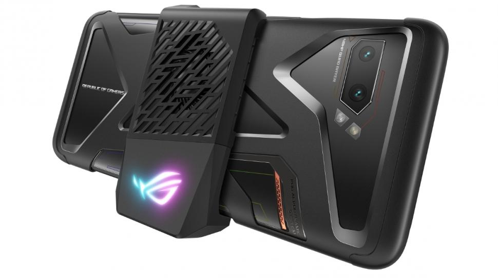

Untuk siapa Asus ROG Phone 2?

Dibekali dengan chipset Snapdragon 855 Plus, Asus ROG Phone 2 dilengkapi dengan pilihan RAM 12 GB dan penyimpanan internal hingga 512 GB. Dengan kapasitas sebesar ini, jelas jika Asus ROG Phone 2 begitu menjanjikan. Walaupun dirilis khusus untuk para gamers, Asus juga ingin memanjakan penggunanya dari segi kamera. Asus ROG Phone 2 dilengkapi dengan kamera belakang yang masing-masing beresolusi 48 MP dan 13 MP. Sedangkan untuk kamera depan, Asus ROG Phone 2 menggunakan resolusi 24 MP. Yang unggul dari perangkat ini adalah baterai berkapasitas 6.000 mAh yang sudah didukung dengan fitur fast charging. Dibuat khusus untuk gamers, Asus mengklaim bahwa Asus ROG Phone 2 ini dapat bertahan hingga 7 jam untuk bermain PUBG Mobile.